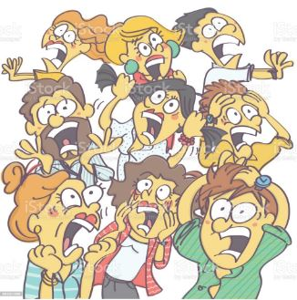
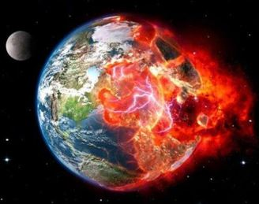

A LUTA CONTRA O FASCISMO E DITADURAS
Não será o fim absoluto da humanidade, mais uma mudança drástica acontecerá na terra levando o planeta a vivenciar uma Nova Era.
ATENÇÃO: Este site foi criado no ínicio do ano de 2012. Naquele tempo foi muito comentado na mídia em geral uma nova data para "o fim do mundo", onde possíveis eventos cataclísmicos ou transformadores aconteceriam no dia 21 de dezembro de 2012 gerando um pouco de medo na popução do planeta inteiro. Enfim, sobrevivemos!!! Decidi manter esta página a nível de curiosidade e para tentar manter o mais fiel possível de quando ele foi lançado em 2012.
|  |  |
*Observação: As informações abaixo foram obtidas de outros sites. Peço perdão, pois não salvei o link dos mesmos para poder colocar suas fontes aqui. Mas as terorias daquele tempo comentavam sobre esses temas a seguir.
Para entender os acontecimentos catastróficos pelo qual a terra passará você precisa entender a bíblia (mais especificamente: Mateus 24, Marcos 13 e Lucas 21), o 3° segredo de Nossa Senhora de Fátima, entre outros.
Lucas 21
A ruína de Jerusalém e o fim dos tempos
5 Como lhe chamassem a atenção para a construção do templo feito de belas pedras e recamado de ricos donativos, Jesus disse: 6 “Dias virão em que destas coisas que vedes não ficará pedra sobre pedra: tudo será destruído.”
7 Então o interrogaram: “Mestre quando acontecerá isso? E que sinal haverá para saber-se que isso se vai cumprir?” 8 Jesus respondeu: “Vede que não sejais enganados. Muitos virão em meu nome, dizendo: Sou eu; e ainda: O tempo está próximo. Não sigais após eles. 9 Quando ouvirdes falar de guerras e de tumultos, não vos assusteis; porque é necessário que isso aconteça primeiro, mas não virá logo o fim.”
10 Disse-lhes também: “Levantar-se-ão nação contra nação e reino contra reino. 11 Haverá grandes terremotos por várias partes, fomes e pestes, e aparecerão fenômenos espantosos no céu. 12 Mas, antes de tudo isso, vos lançarão as mãos e vos perseguirão, entregando-vos às sinagogas e aos cárceres, levando-vos à presença dos reis e dos governadores, por causa de mim. 13 Isto vos acontecerá para que vos sirva de testemunho. 14 Gravai bem no vosso espírito de não preparar a vossa defesa, 15porque eu vos darei uma palavra cheia de sabedoria, á qual não poderão resistir nem contradizer os vossos adversários. 16 Sereis entregues até por vossos pais, vossos irmãos, vossos parentes e vossos amigos, e matarão muitos de vós. 17 Sereis odiados por todos por causa do meu nome. 18 Entretanto, não se perderá um só cabelo da vossa cabeça. 19 É pela vossa constância que alcançareis a vossa salvação.
20 “Quando virdes que Jerusalém foi sitiada Por exércitos, então sabereis que está próxima a sua ruína. 21 Os que então se acharem na Judéia fujam para os montes; os que estiverem dentro da cidade retirem-se; os que estiverem nos campos não entrem na cidade. 22 Porque estes serão dias de castigo, para que se cumpra tudo o que está escrito. 23 Ai das mulheres que, naqueles dias, estiverem grávidas ou amamentando, pois haverá grande angústia na terra e grande ira contra o povo. 24 Cairão ao fio da espada e serão levados cativos para todas as nações, e Jerusalém será pisada pelos pagãos, até se completarem os tempos das nações pagãs.”
Volta do Filho do homem
25 “Haverá sinais no sol, na lua e nas estrelas. Na terra a aflição e a angústia apoderar-se-ão das nações pelo bramido do mar e das ondas. 26 Os homens definharão de medo, na expectativa dos males que devem sobrevir a toda a terra. As próprias forças dos céus serão abaladas. 27 Então verão o filho do homem vir sobre uma nuvem com grande glória e majestade. 28 Quando começarem a acontecer estas coisas, reanimai-vos e levantai as vossas cabeças; porque se aproxima a vossa libertação.”
29 Acrescentou ainda esta comparação: “Olhai para a figueira e para as demais árvores. 30 Quando elas lançam os brotos, vós julgais que está perto o verão. 31 Assim também, quando virdes que vão sucedendo estas coisas, sabereis que está perto o Reino de Deus. 32 Em verdade vos declaro: não passará esta geração sem que tudo isto se cumpra. 33 Passarão o céu e a terra, mas as minhas palavras não passarão.
34 “Velai sobre vós mesmos, para que os vossos corações não se tornem pesados com o excesso do comer, com a embriaguez e com as preocupações da vida; para que aquele dia não vos apanhe de improviso. 35 Como um laço cairá sobre aqueles que habitam a face de toda a terra. 36 Vigiai, pois, em todo o tempo e orai, a fim de que vos torneis dignos de escapar a todos estes males que hão de acontecer, e de vos apresentar de pé diante do Filho do homem.”
O que irá acontecer: Terremoto com duração de 8 horas + 72 horas de escuridão total + catástrofes mundiais.
Segundo a profecia de Fátima uma pessoa em um cargo muito importante morrerá e isso dará inicio a 3ª Guerra Mundial.
“Quando virdes que Jerusalém foi sitiada por exércitos, então sabereis que está próxima a sua ruína.” Lucas 21:20
Antes do “fim” também está prevista uma crise financeira mundial, onde só quem tiver a “marca da besta” (leia-se um chip colocado na mão ou na testa das pessoas) poderá comprar e vender.
Evidencias dos acontecimentos acima descritos nos mais diversos lugares:
- O calendário Maia fala sobre uma transformação, uma mudança de era.
- A astronomia fala que estamos saindo da era de peixes (abertura espiritual da humanidade), para a era de Aquário (União entre todos os povos da terra, contatos imediatos–UFO's, viagens interplanetárias: conhecimento de outros sistemas solares, desenvolvimento da telepatia e outras capacidades cerebrais).
- Livros sobre Extra Terrestres dizem que eles estão aqui para pesquisar as condições do planeta, ajudar a evitar guerras, preparar as pessoas para os acontecimentos do “fim do mundo” e que estarão aqui para ajudar os humanos com sua inteligência e tecnologia na Nova Era.
- A bíblia como você já viu, diz que ora ou outra isto tudo irá acontecer.
- Médiuns e profetas falam das mesmas catástrofes.
- Qualquer livro espiritual sobre o futuro, fala que o planeta irá passar por uma grande transformação.
- O jogo de cartas Illuminati Nova Ordem Mundial contém cartas que mostram os acontecimentos do fim dos tempos.
- As profecias de Nossa Senhora de Fátima, (da qual se diz que o Papa não divulgou toda a profecia), também falam dos mesmos acontecimentos.
Veja as previsões no video a seguir: